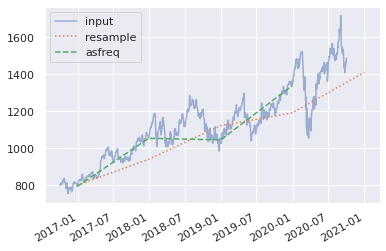

import pandas as pd
import numpy as np
import pandas_datareader.data as web
from datetime import datetime
f = web.DataReader("GOOGL", "av-daily-adjusted", start=datetime(2016, 10, 1),
...: end=datetime(2020, 10, 1),
...: api_key='XGZ3LT2XOAH7BOPT')
f
| open | high | low | close | adjusted close | volume | dividend amount | split coefficient | |
|---|---|---|---|---|---|---|---|---|
| 2016-10-03 | 802.5500 | 803.5400 | 796.230 | 800.38 | 800.38 | 1489212 | 0.0 | 1.0 |
| 2016-10-04 | 805.0000 | 806.5000 | 799.670 | 802.79 | 802.79 | 1258706 | 0.0 | 1.0 |
| 2016-10-05 | 806.0000 | 808.5000 | 800.710 | 801.23 | 801.23 | 1213820 | 0.0 | 1.0 |
| 2016-10-06 | 804.0800 | 806.9450 | 800.510 | 803.08 | 803.08 | 1099909 | 0.0 | 1.0 |
| 2016-10-07 | 805.9300 | 805.9400 | 796.820 | 800.71 | 800.71 | 1163899 | 0.0 | 1.0 |
| ... | ... | ... | ... | ... | ... | ... | ... | ... |
| 2020-09-25 | 1425.0500 | 1445.9400 | 1407.680 | 1439.06 | 1439.06 | 1516677 | 0.0 | 1.0 |
| 2020-09-28 | 1471.9900 | 1472.9900 | 1446.280 | 1458.66 | 1458.66 | 1539236 | 0.0 | 1.0 |
| 2020-09-29 | 1463.9100 | 1472.0000 | 1454.000 | 1466.02 | 1466.02 | 1591112 | 0.0 | 1.0 |
| 2020-09-30 | 1460.9350 | 1486.1975 | 1455.755 | 1465.60 | 1465.60 | 2046170 | 0.0 | 1.0 |
| 2020-10-01 | 1483.6608 | 1495.0700 | 1476.800 | 1487.90 | 1487.90 | 1644221 | 0.0 | 1.0 |
1007 rows × 8 columns
pd.DatetimeIndex(f.index)
DatetimeIndex(['2016-10-03', '2016-10-04', '2016-10-05', '2016-10-06',
'2016-10-07', '2016-10-10', '2016-10-11', '2016-10-12',
'2016-10-13', '2016-10-14',
...
'2020-09-18', '2020-09-21', '2020-09-22', '2020-09-23',
'2020-09-24', '2020-09-25', '2020-09-28', '2020-09-29',
'2020-09-30', '2020-10-01'],
dtype='datetime64[ns]', length=1007, freq=None)
f['2020-01-01':'2020-12-31']
| open | high | low | close | adjusted close | volume | dividend amount | split coefficient | |
|---|---|---|---|---|---|---|---|---|
| 2020-01-02 | 1348.4100 | 1368.6800 | 1346.490 | 1368.68 | 1368.68 | 1364265 | 0.0 | 1.0 |
| 2020-01-03 | 1348.0000 | 1373.7500 | 1347.320 | 1361.52 | 1361.52 | 1170629 | 0.0 | 1.0 |
| 2020-01-06 | 1351.6300 | 1398.3200 | 1351.000 | 1397.81 | 1397.81 | 2339343 | 0.0 | 1.0 |
| 2020-01-07 | 1400.4600 | 1403.5000 | 1391.560 | 1395.11 | 1395.11 | 1726456 | 0.0 | 1.0 |
| 2020-01-08 | 1394.8200 | 1411.8500 | 1392.630 | 1405.04 | 1405.04 | 1766274 | 0.0 | 1.0 |
| ... | ... | ... | ... | ... | ... | ... | ... | ... |
| 2020-09-25 | 1425.0500 | 1445.9400 | 1407.680 | 1439.06 | 1439.06 | 1516677 | 0.0 | 1.0 |
| 2020-09-28 | 1471.9900 | 1472.9900 | 1446.280 | 1458.66 | 1458.66 | 1539236 | 0.0 | 1.0 |
| 2020-09-29 | 1463.9100 | 1472.0000 | 1454.000 | 1466.02 | 1466.02 | 1591112 | 0.0 | 1.0 |
| 2020-09-30 | 1460.9350 | 1486.1975 | 1455.755 | 1465.60 | 1465.60 | 2046170 | 0.0 | 1.0 |
| 2020-10-01 | 1483.6608 | 1495.0700 | 1476.800 | 1487.90 | 1487.90 | 1644221 | 0.0 | 1.0 |
190 rows × 8 columns
%matplotlib inline
import matplotlib.pyplot as plt
import seaborn; seaborn.set()
close = f.close
close.index = pd.DatetimeIndex(close.index)
close.plot()
<matplotlib.axes._subplots.AxesSubplot at 0x7f50f0293940>
close.plot(alpha=.5, style='-')
<matplotlib.axes._subplots.AxesSubplot at 0x7f50efaa68e0>
close.resample('BA').mean().plot(style=':')
<matplotlib.axes._subplots.AxesSubplot at 0x7f50ef9ec130>
close.asfreq('BA').plot(style='--')
<matplotlib.axes._subplots.AxesSubplot at 0x7f50ef99f9a0>
close.plot(alpha=0.5, style='-')
close.resample('BA').mean().plot(style=':')
close.asfreq('BA').plot(style='--');
plt.legend(['input', 'resample', 'asfreq'],
loc='upper left');
